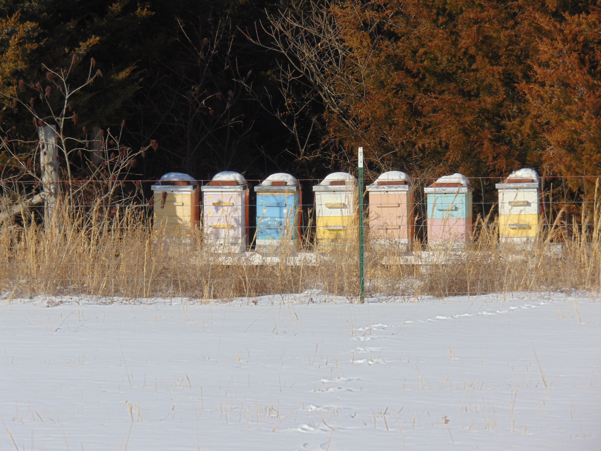
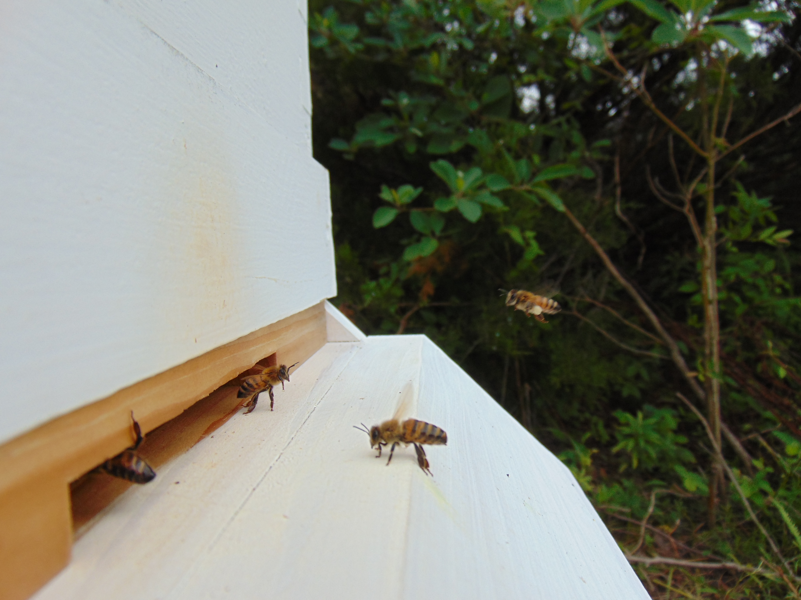

Bees gather nectar and pollen to store in their hive. Bees turn raw nectar gathered from plants into honey which they then store in their hive to save for times when food sources are low.
Planting flowering plants in your area provides more food for the bees. This helps the bees make more honey for themselves and you. Planting flowers is also benefecial for native bees such as mason bees that may live in your area.
During a derf, a time when plants do not have pollen and nectar, it is a good idea to feed your bees. Early spring, late fall, winter, and during a drought, are all good times to consider feeding your bees.
Feed a 2 to 1 water to sugar syrup when temperatures are above freezing. This can be done with any type of bee feeder, but we prefer to use a "super feeder", which is a feeder that sits over a hole in the inner conver inside a super. Feed a 1 to 1 sugar candy when temperatures are below freezing. This requires adding sugar to a screened "sugar board" and letting it harden before adding it to the hive
A Year of Beekeeping

The following is a short list of a typical year of beekeeping
Spring: Hives are getting ready for summer by building stores, the queen is laying more, and the bees are becoming much more active on warm days.
Summer: Bees are at their best, honey flows are frequent depending on the weather, bees are always active, hives are in full swing
Fall: Bees begin to get ready for the winter ahead by defending their stores, slowing brood production, and nectar is less frequent toward late fall so honey flows will no longer occur
Winter: A critical time for bees, bees use their stores, cluster around the queen to stay warm, and cannot leave their hive until temperatues warm.
Depending on the year honey flow may be more abundant in the Spring, Summer, or Fall. Check your local weather to determine when your bees may be bussiest.
When deciding when to inspect your hives through the year, weather plays a big part. A general rule is to not inspect when temperatures are under 50 degrees or when winds are strong. Bees are typically happiest when the temperatures are around 70 to 80 degrees.
Be sure to research your local climate to determine your exact Year of Beekeeping. Predicting when to do what can sometimes be tricky
When to Super?

When do I add my supers in the spring?
General rules to follow are:
When temperatures are consistently above 50 degrees
When temperatures no longer drop below freezing at night
After the bees have collected enough food for themselves in their brood boxes (generally 5 to 8 frames of stores per box).
When do I remove my supers?
Supers are generally removed when they are completly filled and capped. When the cells are capped the honey is the correct moisture for storage. Supers are generally left on until they are full as long as the bees do not need them removed for other reasons.